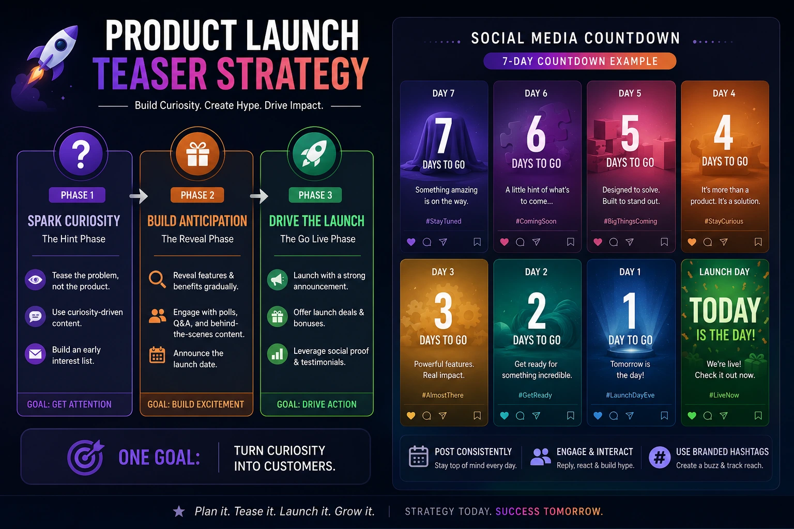
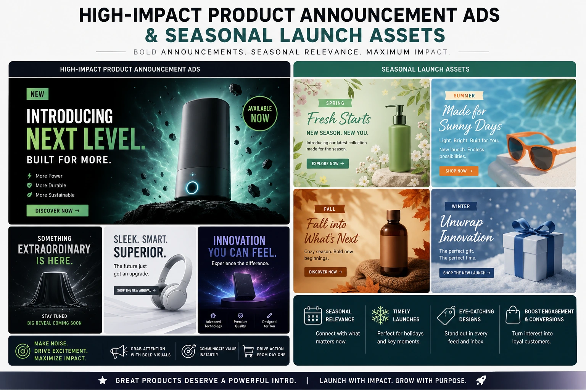

The 3-Phase Teaser Strategy for Launching a New Product Line Online
Why Most Product Launches Underperform Before They Begin
The most common product launch failure in Indian e-commerce is not a bad product — it is a premature reveal. A brand develops a product over months, the product is genuinely good, the photography is professionally done, and on launch day the brand posts the full product reveal to its social media and sends an email to its list. The result: modest engagement, average conversion, and a slow sales curve that never achieves the velocity the product deserved.
The problem is not the product or the photography. The problem is that the audience arrived at the purchase moment without having been taken through the psychological arc that precedes it: curiosity, then desire, then purchase intent. A brand that skips to the full product reveal skips the stages that convert a passive follower into a motivated buyer — and it pays for that skip in conversion rate, in revenue, and in the momentum that should have accompanied a genuinely good product's arrival in the market.
The product launch teaser strategy is the systematic approach to building this arc deliberately — using a three-phase content and advertising rollout that generates curiosity before the reveal, desire during the reveal, and purchase intent at the conversion moment. It is also the framework that determines the complete set of digital ad campaign visual assets that need to be produced before the launch begins.
The Psychology of Pre-Launch Anticipation
Creating hype for a product drop is not a marketing technique — it is a psychological process. The specific sequence of emotional states that produces maximum purchase motivation at the moment of product availability is not accidental — it can be designed and produced deliberately through a phased content strategy.
The psychological arc that a three-phase teaser strategy produces:
- Phase 1 produces curiosity. The audience encounters content that is clearly about something — but the something is not yet revealed. The specific product detail, the atmospheric visual, the cryptic statement — these communicate that something is coming without communicating what. The curiosity this produces is motivating: the audience member who is curious about a brand's upcoming product is more attentive to subsequent content from that brand than they would otherwise be, which means Phase 2 content reaches a more engaged audience than it would without the Phase 1 curiosity-building.
- Phase 2 produces desire. The partial reveal — specific product features, key visual details, the price point, the lifestyle context — converts curiosity into desire. The audience member who was curious about what was coming is now seeing enough to want it. Desire at this stage is more powerful than desire at the moment of a full cold reveal because it has been preceded by anticipation — the audience has been waiting for this information, and waiting amplifies the value of the information when it arrives.
- Phase 3 converts desire into action. The full product reveal, combined with the availability signal (the launch), converts the desire built in Phase 2 into purchase intent. The audience member who has arrived at Phase 3 through the full curiosity-desire arc is not a cold shopper evaluating a product they have just encountered — they are a warm buyer who has been building toward this purchase for seven to fourteen days.
Phase 1: Awareness (Days 14 to 7 Before Launch)
Generate curiosity through selective, non-revealing content. Macro product teaser videos, atmospheric images, countdown language, and behind-the-scenes hints. No product name, no price, no full reveal — only enough to create the question "what is this?"
Phase 2: Consideration (Days 7 to 1 Before Launch)
Reveal key product details and build desire through partial reveals, feature highlights, social proof, and lifestyle context. Begin paid advertising to extend reach beyond organic following. Convert curious followers into warm, desire-motivated buyers.
Phase 3: Conversion (Launch Day to 72 Hours After)
Deploy the full product reveal with direct purchase messaging, urgency signals, and conversion-optimised paid advertising. The audience that has been through Phases 1 and 2 converts significantly faster than a cold audience encountering the product for the first time.
Post-Launch: Momentum (Days 4 to 30 After Launch)
Sustain the launch momentum through customer content, social proof accumulation, use case content, and retargeting advertising to the audiences who engaged with Phase 1 and 2 content but did not convert on launch day.

Phase 1 Visual Assets: Creating Hype Without Revealing the Product
The digital ad campaign visual assets produced for Phase 1 must accomplish something counterintuitive: they must generate genuine audience engagement and curiosity about something they have not yet seen. The creative approach that produces this outcome is selective disclosure — revealing compelling sensory details that imply a product without showing it.
The specific Phase 1 asset types:
-
Macro product teaser videos. Close-up, slow-motion video clips of
compelling product details — the texture of a fabric, the glint of a hardware element,
the movement of a liquid, the precision of a cut — that communicate quality and
desirability without revealing the product's form or identity. These are the highest-performing
Phase 1 content type because they trigger the brain's curiosity response most directly:
the viewer who can see a detail wants to know what the detail belongs to.
Production note: macro product teaser videos are shot during the same production session as the full product photography — they are extracted from the detail footage captured alongside the hero catalog images. The incremental production cost is minimal; the Phase 1 campaign value is significant. - Atmospheric still images. High-quality photographs that communicate the product's world — the lifestyle, the colour palette, the emotional register — without showing the product itself. For a new jewellery collection, this might be an atmospheric image of an empty jewellery stand with specific lighting that communicates the collection's colour palette. For a new textile collection, it might be a detail of a fabric swatch arrangement that reveals the collection's colour story without showing the finished garments.
- Social media countdown content. Social media countdown media — branded countdown graphics, Stories countdown stickers, daily "X days until" posts that maintain audience attention and engagement across the full Phase 1 period. Each countdown post should include a new Phase 1 detail — a colour name, a material hint, a production detail — so that the countdown is also a progressive disclosure rather than a repetitive announcement.
- Behind-the-scenes production content. Images and short video clips from the production process — the shoot day, the packaging design, the quality control — that communicate craft and investment without revealing the finished product. Behind-the-scenes content performs particularly well for Indian audiences because it communicates authenticity and the human dimension of the brand alongside the product anticipation.
Phase 2 Visual Assets: Building Desire Through Partial Reveals
Phase 2 begins the product reveal — but deliberately, selectively, and with the specific intent of maximising desire before availability rather than providing a complete information set. The promotional video roll-out in Phase 2 should reveal enough to confirm the product's quality and desirability, while maintaining enough mystery to sustain the anticipation that drives Phase 3 conversion velocity.
The specific Phase 2 asset types:
- Partial product reveal video. A 30 to 60 second video that reveals the product's key visual feature — the hero design, the signature detail, the most commercially compelling visual element — while the full product range remains unrevealed. For a saree collection, this might be the hero saree's full reveal while the supporting collection remains teased. For a product range, this might be a reveal of the hero SKU with packaging partially obscuring the full line-up. The partial reveal is the most commercially effective Phase 2 content type because it confirms that the product is worth the desire that Phase 1 generated.
- Feature highlight videos. Short, specific videos — 15 to 30 seconds each — that focus on individual product features, benefits, or differentiating details. One video per feature, released across the Phase 2 period, sustains daily content without requiring a full product reveal before launch day. Each feature highlight is also a standalone paid advertising creative that can be targeted to audience segments most likely to respond to that specific feature.
- Social proof content. Testimonials, reviews, or reactions from pre-launch access holders — invited customers, press contacts, or content creators who received early access — that communicate third-party validation of the product before the general launch. Social proof in Phase 2 converts consideration into desire more reliably than any brand-produced content because it provides the peer endorsement signal that purchase decisions require.
- Lifestyle and context images. Full professional lifestyle photography showing the product in use or in context — the garment worn, the product placed in its environment, the item being used — that communicates how the product fits into the buyer's life rather than just what the product looks like in isolation.
High-Impact Product Announcement Ads: The Phase 3 Conversion Assets
High-impact product announcement ads are the Phase 3 conversion assets that deploy on launch day to the warm audiences built through Phases 1 and 2, and to cold audiences through paid acquisition. They are the most commercially direct assets in the entire launch campaign — and they perform better when deployed to an audience that has been through the teaser phase than they would as cold-audience launch ads without the preceding warm-up.
The specific Phase 3 asset types:
Full Product Reveal Video
- 30 to 90 second cinematic product launch film showing the complete product range
- Opening with a callback to the Phase 1 teaser detail — connecting the launch to the anticipation period
- Delivered in horizontal, vertical, and square formats for all platforms simultaneously
- Includes explicit pricing, availability, and direct CTA — the Phase 3 video is a conversion asset, not just a brand film
Direct Response Paid Ad Creative
- Multiple creative variants targeting different audience segments — warm Phase 1 and 2 audiences, lookalike audiences, cold category intent audiences
- Static ad variants alongside video for platforms where static outperforms video for specific audience segments
- A/B test multiple hooks on launch day — the conversion data from the first 6 to 12 hours informs budget allocation toward the highest-performing creative
- Urgency language where genuinely appropriate — limited edition, limited quantity, launch week pricing — to accelerate the conversion decision
Email Campaign Visual Assets
- Hero image and embedded video (or animated GIF from the launch video) for launch day email
- Product feature images formatted for email column layouts with consistent visual identity
- Countdown timer embedded in the email for time-sensitive launch offers
- Day-2 and day-3 follow-up email assets featuring social proof content from Phase 3 buyers

Seasonal Launch Asset Preparation: The Production Planning Framework
Seasonal launch asset preparation is the production planning discipline that ensures all three phases of visual assets are produced, delivered, and ready to deploy before the launch begins — not produced reactively as each phase approaches. The most common failure in product launch campaigns is Phase 1 being ready on time and Phase 2 and 3 assets being produced under pressure — resulting in quality inconsistency across the campaign.
The backward planning framework for seasonal launch asset preparation:
- T-minus 6 weeks: concept and creative brief. Define the three-phase content plan, the specific asset list for each phase, the production session scope, the distribution calendar, and the paid advertising plan. All three phases of assets are briefed simultaneously — because all three will be produced in the same production session.
- T-minus 4 to 3 weeks: production session. A single, planned production day captures all assets for all three phases simultaneously — Phase 1 macro teaser videos, Phase 2 partial reveal photography and video, and Phase 3 full product reveal photography and video. The efficiency gain of a single integrated session versus three separate productions is the core principle of professional e-commerce brand scaling through launch visual production.
- T-minus 2 weeks: Phase 1 asset delivery and Phase 2 and 3 post-production. Phase 1 assets are delivered first — ready for distribution beginning 14 days before launch. Phase 2 and 3 assets are in post-production simultaneously, to be delivered by T-minus 7 days and T-minus 1 day respectively.
- T-minus 7 days: Phase 2 asset delivery and paid advertising setup. Phase 2 assets are delivered and the paid advertising campaigns for all three phases are set up in the ad platform — Phase 1 campaigns already running, Phase 2 campaigns scheduled to activate at T-minus 7, Phase 3 campaigns scheduled to activate at T-0.
- T-0: launch day deployment. All Phase 3 assets deploy simultaneously across organic channels and paid advertising. Email campaign sends. Product pages go live with the full asset set — hero images, gallery images, lifestyle images, and product video all live at the moment the launch announcement reaches the audience.
E-commerce Brand Scaling: How the Teaser Strategy Compounds Across Launches
The single most powerful e-commerce brand scaling effect of a systematic three-phase teaser strategy is the compounding audience effect it produces across multiple launches. Each launch campaign builds a warmed audience — people who engaged with Phase 1 and 2 content, who watched the full reveal, who purchased or did not purchase the first launch — that is more receptive to the next launch's teaser content than a cold audience would be.
A brand that runs three three-phase launch campaigns per year — for spring, festive, and winter seasons — is building, through each campaign, an increasingly engaged audience who has developed a relationship with the brand's launch pattern: they know a teaser means something good is coming, they have experienced the satisfaction of the reveal, they have bought or bookmarked from previous launches. This audience does not need to be convinced to pay attention during a new teaser — they pay attention because their previous experience with the brand's launches has taught them that it is worth it.
This compounding effect is the most sustainable form of e-commerce brand scaling available through content and advertising strategy — because it builds intrinsic audience engagement rather than renting attention through increasing paid media spend. Each launch campaign that is executed with the full three-phase methodology makes the next launch campaign more efficient, more engaging, and more commercially productive.
The Complete Asset List: What to Brief Your Production Team
The complete digital ad campaign visual assets brief for a three-phase product launch — all produced in a single integrated production session:
- Phase 1 assets: 4 to 6 macro product teaser video clips (10 to 20 seconds each), 6 to 10 atmospheric still images, 3 countdown graphic templates, 2 to 3 behind-the-scenes video clips from the production session itself
- Phase 2 assets: 1 partial product reveal video (30 to 60 seconds), 3 to 5 feature highlight videos (15 to 30 seconds each), 8 to 15 partial and full product lifestyle photographs, social proof content templates for customer and influencer testimonials
- Phase 3 assets: 1 full product launch film (30 to 90 seconds), 2 to 3 direct response paid ad video variants with different hooks, 20 to 40 full product catalog photographs (hero, lifestyle, detail), email campaign header images, website banner images, all assets delivered in all required platform-specific formats
- Post-launch assets: Customer use-case image templates, social proof repurposing templates, retargeting ad creative variants, ongoing organic social content templates for 30-day post-launch period
Conclusion
The three-phase product launch teaser strategy is not a complexity addition to a product launch — it is the structure that makes a product launch commercially maximised rather than commercially average. The brands that consistently sell out product drops, achieve launch day revenue spikes, and build the kind of audience anticipation that makes each successive launch more productive than the last are the ones executing this methodology with the full set of digital ad campaign visual assets produced in advance of the launch, not reactively during it.
Macro product teaser videos, social media countdown media, high-impact product announcement ads, and systematic seasonal launch asset preparation are the components of a promotional video roll-out strategy that treats every product launch as a commercial event rather than a content calendar obligation — and produces the commercial results that that distinction creates.
At The PhD Ads, we produce complete three-phase product launch visual asset sets for Indian e-commerce brands — macro product teaser videos, partial reveal photography and video, full launch films, and platform-formatted digital ad campaign visual assets for all three phases, produced in a single integrated session and delivered on the backward-planned production timeline that makes launches execute without pressure.
Key Topics
Ready to Launch Your Next Product Line with a 3-Phase Strategy?
At The PhD Ads, we produce complete three-phase product launch visual asset sets for Indian e-commerce brands — from macro product teaser videos and social media countdown media to full launch films and platform-formatted ad creative, all produced in a single integrated session planned for maximum commercial impact.
Email: team@e2o.in